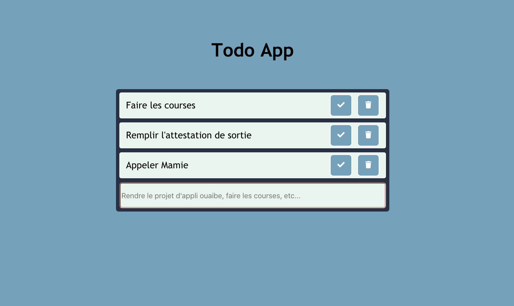

React
On a fait le choix de développer l'application en React pour ce projet d'application Web. Sébastien étant plus habitué des sujets backends, et Adrien, plutôt à l'aise sur Vuejs, nous voulions démarrer un projet simple mais codé proprement from scratch en React. C'est pourquoi nous avons essayé de coller aux bonnes pratiques pour que notre application soit facilement évolutive et que le code soit clair à prendre en main.
Nous avons découpé notre application en petits composants : Todo, TodoForm et ActionButton. Ainsi, ils sont réutilisables partout dans le code, c'est pratique si on ajouter une nouvelle fonctionnalité qui a besoin d'un bouton par exemple. Les composants ont chacun leur propre feuille de style. Ce sont des éléments atomiques de l'application Web.
Encore un avantage aux composants, c'est qu'en séparant le code de la sorte, chaque composant est facilement testable.
Nous avons installé le packet eslint qui est un linter. Le linter checke automatiquement que nous respectons les règles qu'on choisit partout
dans le code. Cela permet d'avoir un style homogène surtout avec Javascript qui permet plusieurs conventions différentes.
On utilise également un service storage-service pour le stockage. C'est en fait un object avec deux méthodes qu'on peut utiliser partout dans le code et hériter.
Cela rend l'application indépendante du
système de stockage et rend l'accès aux données facilement testable. Si un jour on veut sauvegarder directement dans une base de données ou envoyer cela à backend
ça ne changera pas le code de l'application mais seulement ce qui se cache derrière le service (store, localstorage, sessionstorage, etc, ...)
Et surtout, il ne faudra changer le code uniquement dans le service de stockage en changeant les méthodes d'accès et d'écriture sur le stockage.
On utilise aussi le todo service qui hérite du storage service. Ainsi on peut pour des classes plus complexes hériter du storage-service et ajouter des
logiques métiers plus complexes avant de stocker ou de rechercher des valeurs : validation de champs, conversion de valeurs, etc.